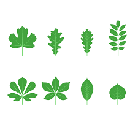

Nachhaltigkeit beginnt nicht erst bei großen Projekten oder teuren Technologien. Schon kleine Veränderungen im Alltag können einen großen Unterschied für die Umwelt machen. Jeder Mensch verbraucht täglich Energie, Wasser und verschiedene Rohstoffe. Wenn viele Menschen bewusster handeln, kann gemeinsam viel CO₂ eingespart und die Natur geschützt werden.

Besonders kurze Autofahrten verursachen unnötig viele Emissionen. Das Fahrrad ist dagegen klimafreundlich, leise und benötigt keinen Kraftstoff. Außerdem fördert Bewegung die eigene Fitness.
Plastik benötigt oft mehrere hundert Jahre, um sich zu zersetzen. Viele Kunststoffe gelangen in die Meere und gefährden Tiere und Pflanzen. Deshalb ist es wichtig, Plastikmüll möglichst zu reduzieren.
Lebensmittel aus der Region müssen oft nicht über lange Strecken transportiert werden. Dadurch entstehen weniger Abgase und die Produkte bleiben frischer. Saisonale Produkte benötigen außerdem weniger Energie beim Anbau.
Wasser und Strom werden häufig verschwendet, obwohl sie wertvolle Ressourcen sind. Durch einfache Gewohnheiten kann jeder Haushalt Energie sparen und gleichzeitig Geldkosten senken.
Wälder, Flüsse und Tiere sind wichtige Bestandteile unseres Ökosystems. Wenn wir die Natur schützen, sorgen wir dafür, dass auch zukünftige Generationen in einer gesunden Umwelt leben können.